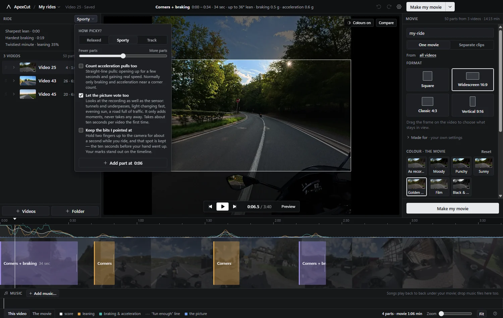
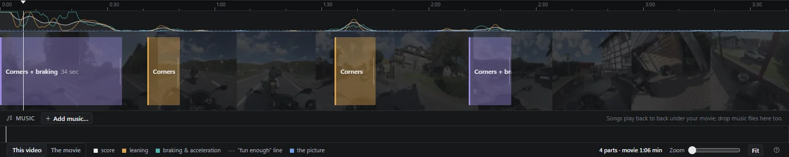
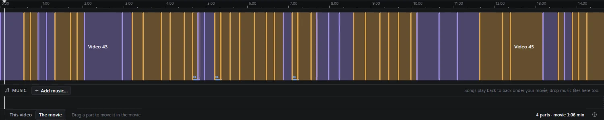
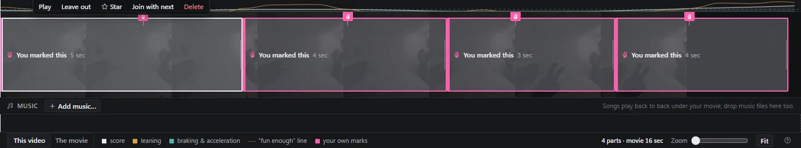
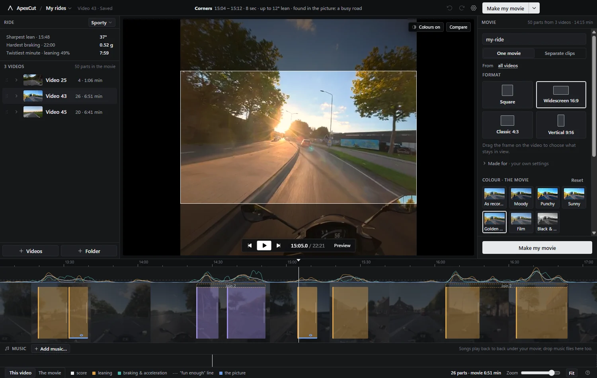
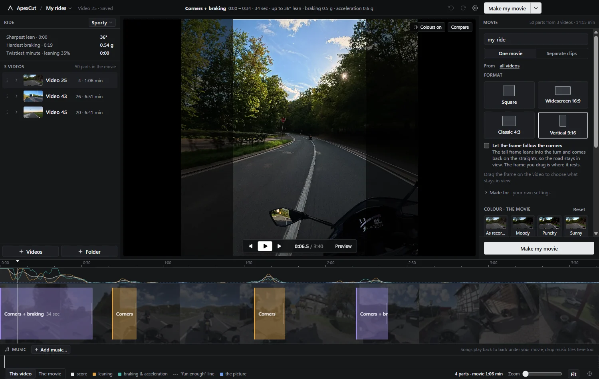
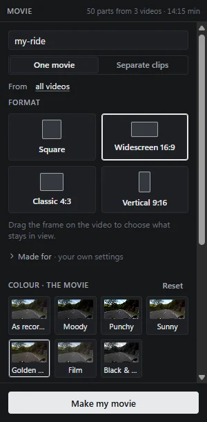

Documentation
Everything ApexCut does
Short version: add your rides, look at what it found, press Make my movie. The rest of this page is for when you want more than that.
Install and first run
Download the installer or the portable build from the
latest release. The
installer puts ApexCut in your Start menu and keeps itself up to date; the portable
build is a single .exe that leaves nothing behind.
Windows may warn that the app is from an unknown publisher — the builds are not signed with a paid certificate. Choose More info → Run anyway, or check the file against the release page if you would rather be careful.
On the first run ApexCut asks nothing and creates one project called “My rides”. Movies
land in Videos\ApexCut until you point it somewhere else under Settings.
Adding your rides
Use + Videos for single recordings or + Folder for a whole card — the
root of the memory card works, because folders are searched three levels deep (DCIM › 100MEDIA
and the like). You can also drag files onto the window.
Copy whole folders off the card rather than single files. Cameras write
a small proxy next to every recording — .LRF on DJI, .LRV on
GoPro — and ApexCut uses it for scrubbing, the filmstrip and the scan. Without it
everything still works, but the app has to read the full-size recording and scrubbing
gets slower.
When a pick holds more than one riding day, ApexCut offers to split it into a project per day. Recordings you already added are recognised and never scanned twice.
What the scan does
A scan never looks at your pictures. It copies the motion track out of the recording —
djmd on DJI, gpmd on GoPro — and works out, thirty times a
second: how far the bike is leaning, how fast it is changing direction, and how hard it
is accelerating or braking. That is scored over a two second window, smoothed, and
everything above the “fun enough” line becomes a part.
Because no video is decoded, a twenty minute recording is scanned in a few seconds. The result is cached per recording and shared between projects, so adding the same ride to a second project costs nothing.
Camera on your helmet, not the bike? That is what ApexCut is tuned for. Head movement pollutes the turn rate, so a corner needs both lean and a sustained change of direction before it counts — a shoulder check at a junction does not.
How picky?
The button at the top of the Ride panel opens everything about what gets picked.

- Relaxed, Sporty, Track. Presets for the kind of riding: a relaxed tour keeps gentler corners, Track only counts what is genuinely quick.
- Fewer or more parts. Moves the “fun enough” line. Everything is rescored at once, without touching the video.
- Count acceleration pulls too. Off by default. With it on, opening up on a straight for a few seconds counts as well, not only braking and acceleration near a corner.
- Let the picture vote too. See below.
- Keep the bits I pointed at. See below.
Changing any of these never loses your own edits: parts you added, joined or trimmed by hand survive every rescore.
The timeline

The curves at the top are the score, leaning, and braking and acceleration; the dashed line is where “fun enough” starts. Underneath, every part is a block over a filmstrip of the ride.
- Click a block to select it, Shift+click for more.
- Drag an edge to keep more or less; edges snap to the score.
- Leave one out instead of deleting it — it stays on the timeline, out of the movie.
- Join a chain of corners into one long sweep. ApexCut suggests chains that belong together with a dashed bar above them.
- Star the ones you love; the movie panel can use only those.
The switch at the bottom left changes what the lane shows: This video is the open recording in its own time, The movie is every part of every ride back to back, in the order it will play. Drag a part there to move it in the movie.

Your own marks
Hold two fingers up to the camera for about a second while you ride. Switch Keep the bits I pointed at on and ApexCut looks through the recording for that gesture; every one it finds becomes a part covering the ten seconds before your hand went up and two after — because you mark a moment once it has happened.

Marked parts are pink, named “You marked this”, and carry a flag at the exact moment you made the gesture — click it to jump there. They are manual parts, so no preset, slider or rescan can push them out.
There is no hand model in this: it looks for the shape a gloved hand makes in front of a wide-angle lens. Hold the gesture up for about a second; a flash of half a second may be missed. In the dark it marks something wrong about once every twenty minutes, and a wrong mark is one part to delete.
The picture’s vote
The sensor knows how the bike moved, not what the ride looked like. Switch Let the picture vote too on and ApexCut looks at the recording as well: light changing fast (a tunnel, an underpass, coming out of the trees), warm and saturated light (low evening sun), and a picture full of detail (a town, traffic, other riders).

It can only ever add parts, never take one away, and each one says why it was picked — hover it and the title bar reads “found in the picture: low evening sun”. On the timeline those parts carry a blue line and an eye.
The first look costs about ten seconds per recording and is remembered, so switching the option off and on again is free. It judges light, colour and detail; it does not know what is in the picture.
Shape and framing
The camera films a square. Pick the shape your movie needs and drag the frame on the video to say what stays in view:
- Square — as recorded, and a lossless copy (see Making it).
- Widescreen 16:9 — YouTube, TV, everything landscape.
- Classic 4:3 — a bit more sky and road.
- Vertical 9:16 — Reels, Shorts, TikTok, a phone.

With vertical chosen there is one extra switch: Let the frame follow the corners. The tall frame then leans into the turn and comes back on the straights, so the road stays in view instead of sliding out of the picture. The frame you drag is where it rests, and the window on the video shows exactly what the movie will do.
Made for, folded under the tiles, sets shape and sound together for YouTube, for Reels and Shorts, or leaves everything as recorded.
Colours
Seven looks — as recorded, Moody, Punchy, Sunny, Golden hour, Film, Black & white — each drawn on a frame of your own ride. Fine-tune folds out nine sliders (brightness, contrast, highlights, shadows, saturation, warmth, tint, dark edges, sharpen).

Press Compare over the video and drag the line: as recorded on one side, your colours on the other. Colours belong to the movie, but any single part can have its own — useful when one corner was shot straight into the sun.
Music and sound
Drop songs onto the music lane under the timeline, or use Add music…. They play back to back under the movie; drag the ends of a song to trim it, and use the toolbar over it for fade in, fade out and volume.
Two sliders in the lane header set the balance between the music and the ride’s own sound. Under Sound in the Movie panel, Make every movie equally loud evens the finished movie out to the level phones and websites play at, so one ride is not twice as loud as the last one you made.
Riding data on the picture
Optional, and off by default. Lean angle draws a small bike that leans with you and the angle in degrees; Dashboard adds a dial and a bar for braking and acceleration. Pick the corner it sits in. It is drawn into the movie itself, from the same numbers the timeline uses.
Making it
Make my movie cuts every part, joins them with your chosen transition (crossfade, a straight cut, or a dip to black), lays the music under it and writes one MP4. Separate clips writes one file per part instead.
The rules it holds itself to:
- Nothing is scaled. A format crops the recording at full resolution.
- 10-bit stays 10-bit, through the colour work and the export.
- Square is copied, not re-encoded — the exported parts are the original bytes, cut at the nearest keyframe. (A transition or colours force an encode, because new pixels have to be made.)
- Everything else is HEVC at CQ 18 on your GPU (NVENC, QuickSync or AMF), with libx265 as a fallback, and a bitrate cap that follows the pixels you kept.
- Your recordings are read-only. Always.
The card shows progress, elapsed time and an estimate. You can keep working while it runs; the movie is made from the parts as they were when you pressed the button.
Projects and files
A project is one movie: a set of rides, the parts you picked, the colours, the music and the shape. A recording can be in several projects without being scanned twice, because the scan belongs to the recording and the picks belong to the project.
Export project writes a small .apexcut file with the paths and
your picks — no video — which another machine can import as long as it can reach the
same recordings.
Everything ApexCut keeps lives in
%APPDATA%\ApexCut\data: the library, the projects, and one folder per
recording with its scan. Settings → Storage shows what that costs and can clean up scans
of recordings no project uses any more.
Keyboard shortcuts
| Space | Play or pause |
|---|---|
| L / K / J | Play faster · pause · jump back ten seconds |
| , / . | One frame back or forward |
| ← / → | Five seconds; with Shift, one second |
| [ / ] | Previous or next part |
| I / O | Set the start or the end of the selected part here |
| Shift + I / O | Trim that edge to where the action really begins or ends |
| N | New part at the playhead |
| M | Join the selected parts |
| F | Star or unstar |
| Delete | Delete the selected parts |
| Esc | Clear the selection |
| Ctrl + Z / Y | Undo · redo |
| Ctrl + K | What do you want to do? — search everything |
| ? | The full list, inside the app |
Cameras and formats
DJI Osmo Action. The camera writes its own attitude thirty times a
second next to the picture, which is exactly what the scoring wants. The
.LRF proxy is used for scrubbing and the filmstrip.
GoPro Hero5 and newer. GoPro writes an accelerometer and a gyroscope
rather than an attitude, so ApexCut fuses the two itself and writes the result at a
steady 30 Hz. Measured against a Hero8, which does store its own attitude, the two never
differ by more than a few degrees. Copy the .LRV file along for smooth
scrubbing.
Anything else. A recording with no motion track says so plainly. You can still cut it by hand, but nothing is found for you. GPS, where a camera records it, is read but not used yet.
Privacy
ApexCut has no account, no analytics and no telemetry. Scanning, editing and exporting happen on your computer. It reaches the network for exactly two things:
- Updates. It asks GitHub whether a newer release exists, and downloads it if you say yes.
- Send to my phone. Your own computer serves one finished movie to your own network behind a random address, for half an hour.
Your recordings are opened read-only and never leave the machine.
When something goes wrong
“This video has no motion data”
The recording has no sensor track: a screen recording, a file already edited elsewhere, or a camera that does not write one. Copy the original from the card and scan that.
Scrubbing is slow, or the filmstrip takes a while
The small proxy file is missing, so the app is reading the full-size recording. Copy the
.LRF (DJI) or .LRV (GoPro) file next to it off the card.
A video went missing
Moved the files? The Ride panel offers Find it again: point ApexCut at the new place and everything you picked comes back, untouched.
The phone cannot open the QR link
Phone and computer must be on the same network, and Windows has to allow ApexCut to accept connections (allow it on private networks when asked). Guest or client-isolated Wi-Fi blocks this by design.
Something else
Settings → About has Make a problem report: a zip with the logs and what the app knows about your setup, saved to your Documents. Attach it to an issue on GitHub and it can be fixed.
Under the hood
For how the scoring works, what exactly is read out of each camera, and the design rules the app follows, the repository carries the technical documentation:
- Scoring — the features, the gates and the thresholds.
- DJI metadata and GoPro metadata — what is in the track, and how it is read.
- Gestures — how the two-finger mark is found, and how well.
- Architecture and design — how the app is put together.